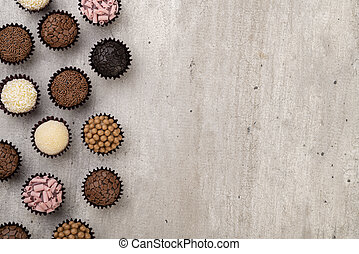

<!DOCTYPE html>
<html lang="en">
<head>
	<meta charset="UTF-8">
	<meta name="viewport" content="width=device-width, initial-scale=1.0">
	<title>Document</title>

    <link rel="stylesheet" href="aula.css">

</head>
<body>
	
</body>
</html>



<h1>Ingredientes<h1/>
<p>4 colheres (sopa) de chocolate do padre ou achocolatado em pó
 colher (sopa) de manteiga sem sal
 lata de creme de leite<p/>
  
  <h1> modo de preparar<h1/>
<li/>Deixe cozinhar em fogo baixo por aproximadamente 10 minutos ou até que solte do fundo da panela.<l1/>
<li/>Mexa sempre com a ajuda de uma colher de pau.
Distribua em copinhos.
Se desejar, coloque um pouco na geladeira antes de comer.</p>


